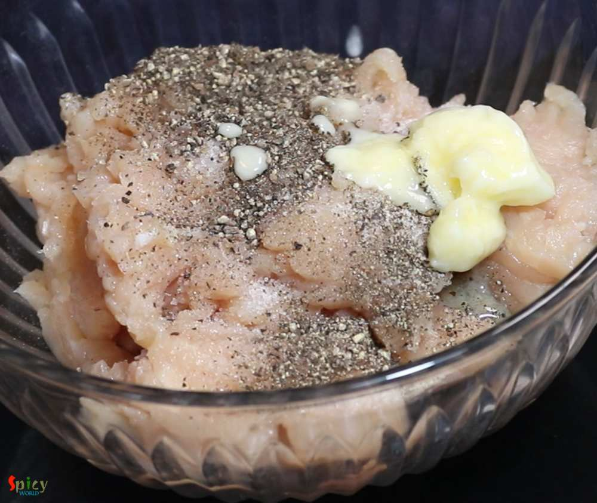
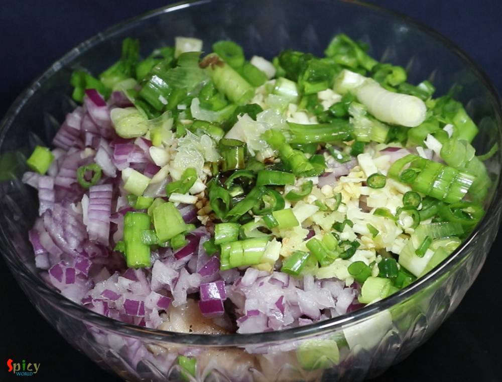
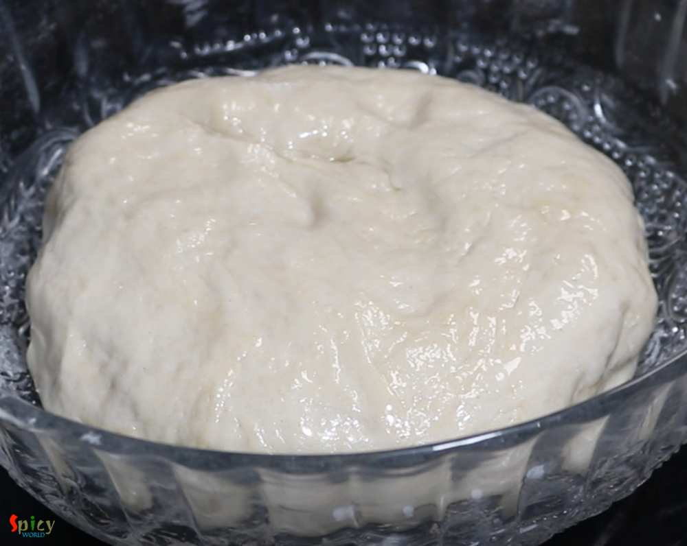
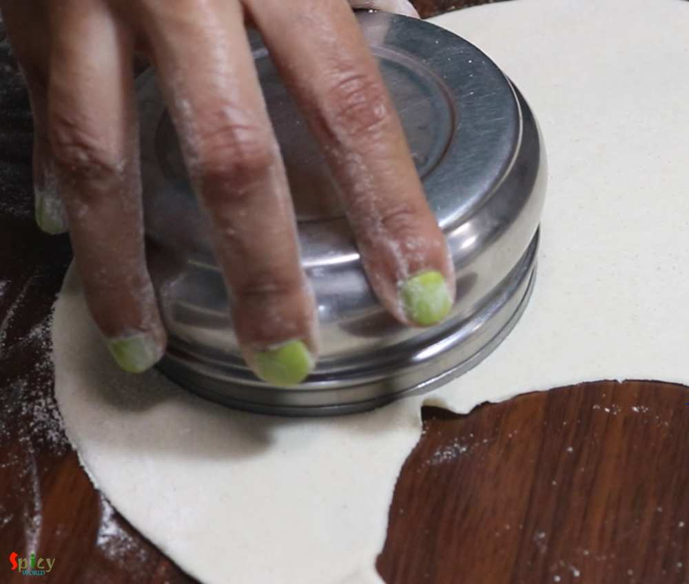
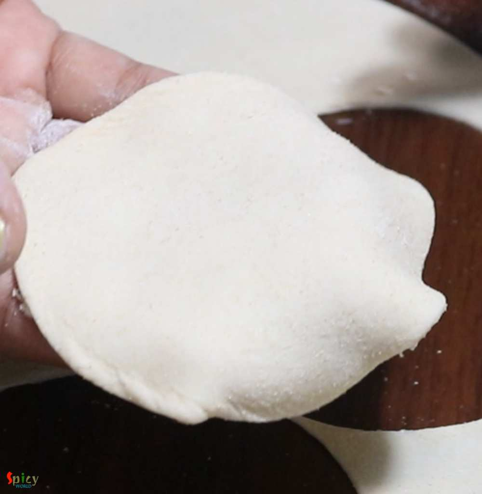
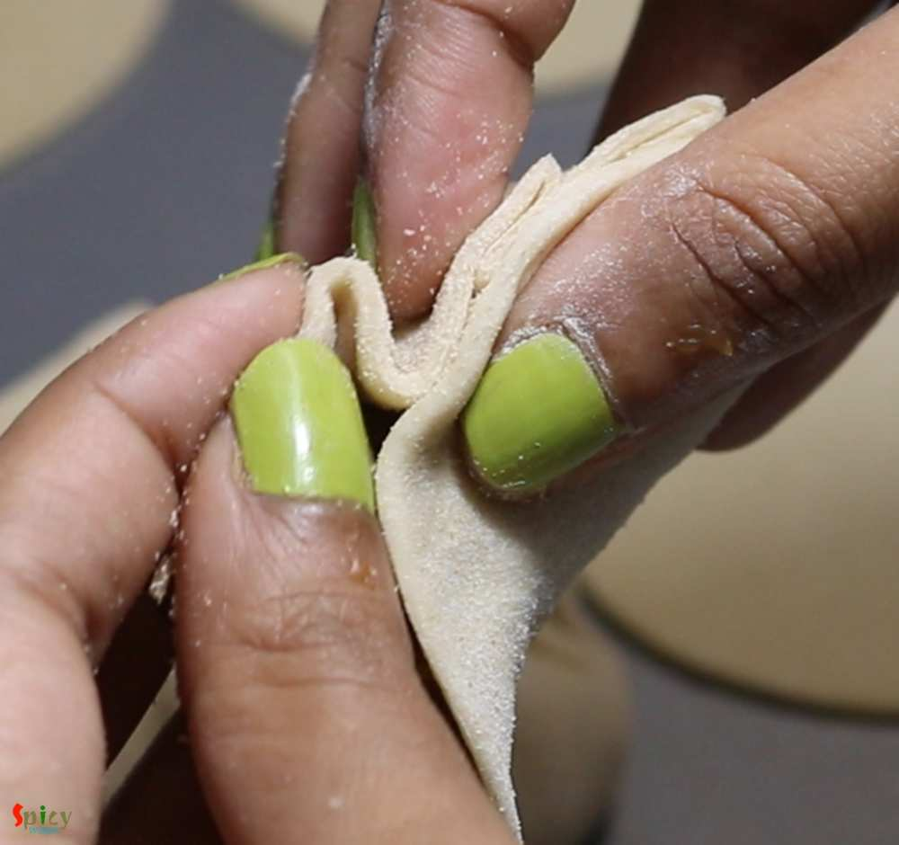
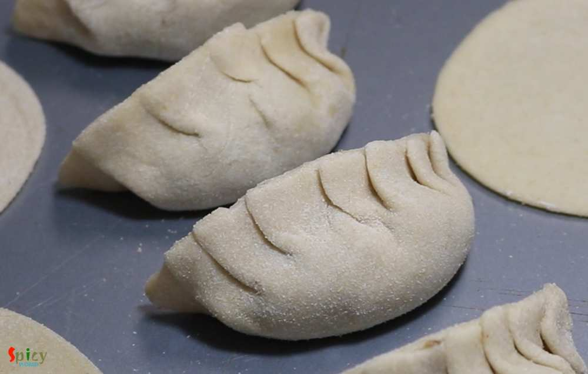
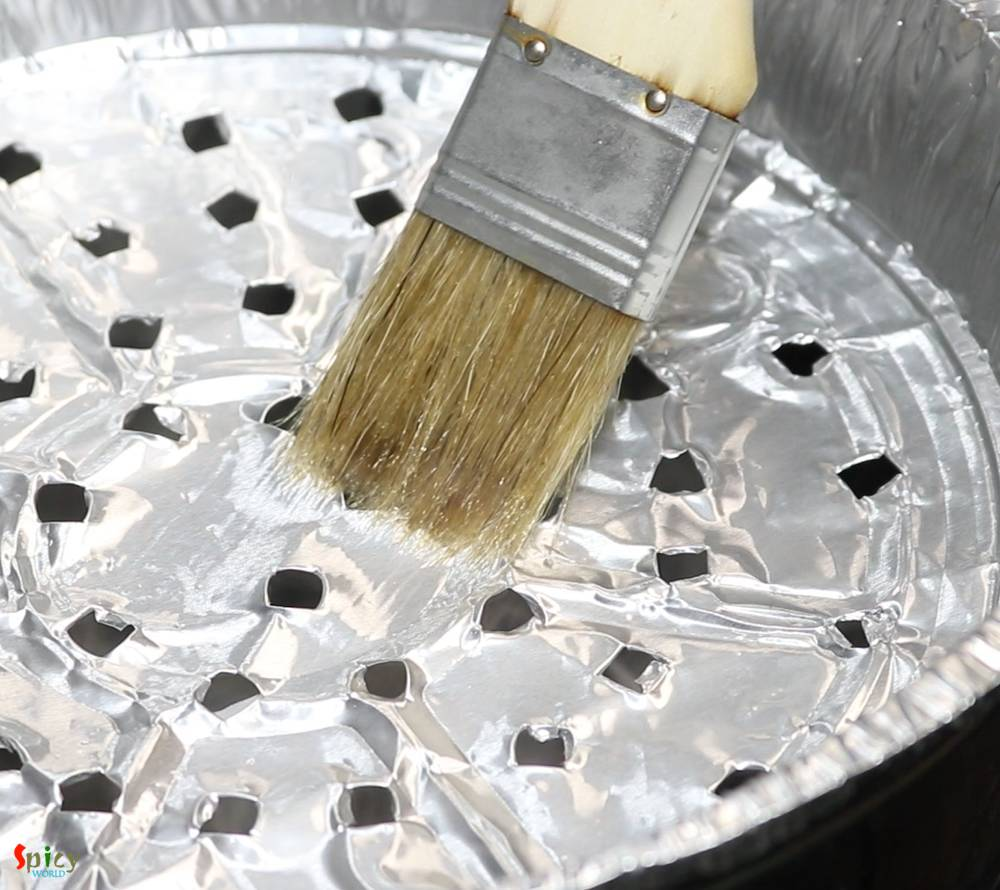
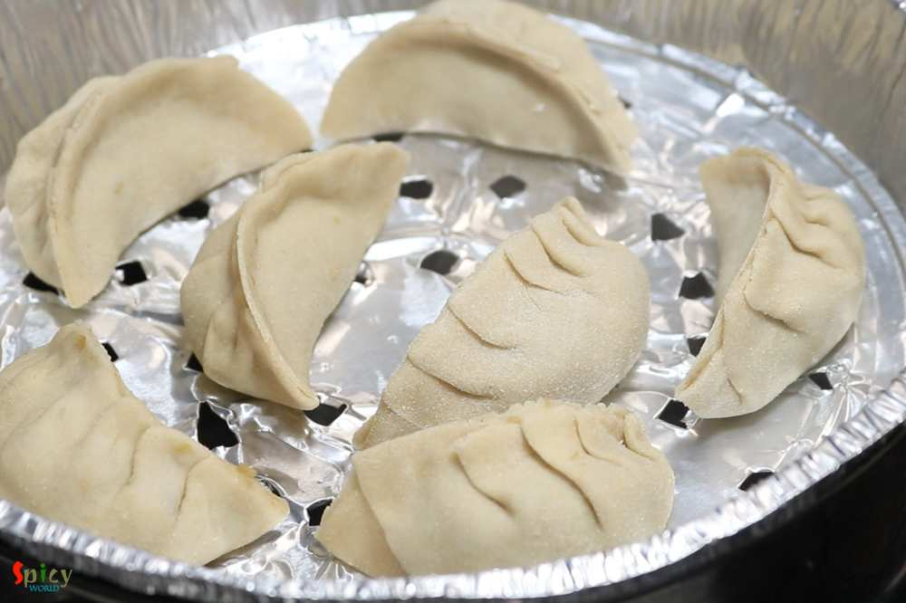
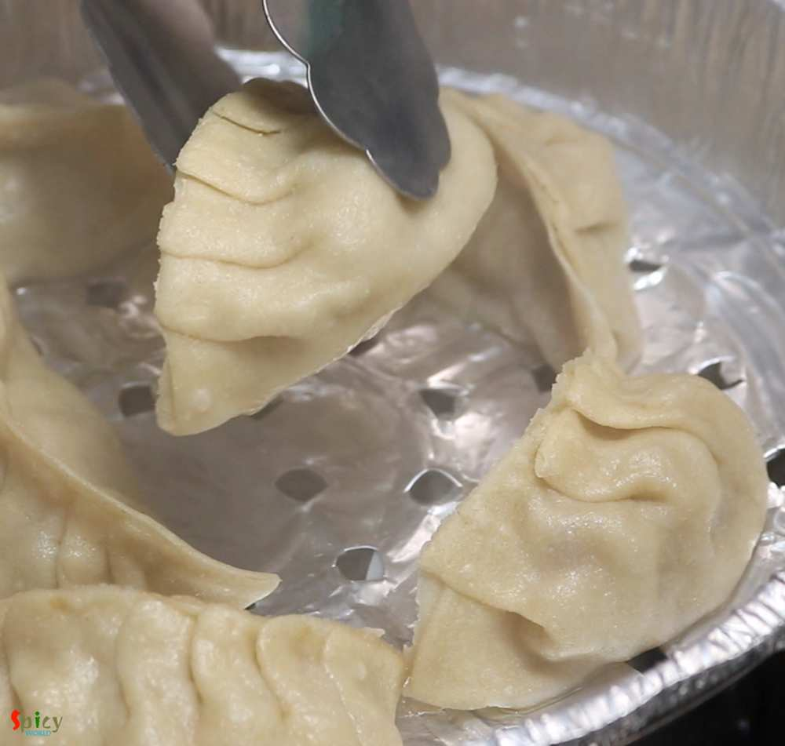

Simple and Easy Recipes
Steamed Chicken Momo
By Arpita © 2020 Spicy World
Feb 7, 2019
Feb 7, 2019

One of the popular Tibetian delicacy is Momo. They are very similar to dumplings and now a well known street food across India. You will get so many varieties from modern MOMO shops like 'MOMO I AM', 'WOW MOMO' etc. Steamed chicken momos are healthy and tastes more delicious with hot & spicy red chutney. Thin wrapper made out of flour will be filled with tasty ground chicken filling, and then they will be steamed to perfection. You can enjoy them as brunch or snacks.

Ingredients
- 2 cups of all purpose flour or maida.
- Salt.
- Warm water as required.
- 3 Tablespoons of cooking oil.
- 500 grams of minced (almost paste) chicken.
- 2 Teaspoons of black pepper powder.
- 1/4th cup of finely chopped onion.
- 2 Tablespoons of finely chopped garlic.
- 1 Tablespoon of finely chopped ginger.
- 2 green chilies, finely chopped.
- A handful of chopped green onion.
- 3 Tablespoons of butter.
- 2 Tablespoons of soy sauce.
- 2 Tablespoons of lemon juice or vinegar.
{kind=link}
{kind=link}
Steps
You will need very smooth minced chicken almost like a paste for momo. If you get that chicken then it will be okay otherwise put the minced chicken in a blender and blend it for 2-3 times, it will become smooth.
Add salt, pepper powder and melted butter or oil in the chicken paste.
Next add chopped onion, ginger, garlic, green chilies, green onion, soy sauce and lemon juice.
You can add some MSG, if you want. Now mix everything well with your hand or spoon, then keep it aside for 3 hours or for the best result keep it in the fridge for overnight.
For the dough, mix flour and some salt. Then gradually add warm water and make a firm dough - neither very soft nor too hard.
Knead the dough well for 2 minutes then apply 1 Teaspoon of oil all over it.
Cover it with a damp cloth for 30 minutes.
After that take a small portion from the dough.
With the help of some dry flour roll it to a thin round disc.
Place a round shaped bowl on it and cut 2 or 3 rounds.
You will get perfect round and thin wrapper. Do the same with rest of the dough.
Obviously you can individually roll very small balls one by one.
Place one wrapper on your palm. Then put a tbsp of chicken filling in the center of the wrapper. If you are a beginner then go with small amount of filling.

Now is the tricky part. No, don't feel scared, making the pleats is easy. After making 2-3 momos it will appear easier.
First make one pleat and then immediately pinch it with the other side. For better idea I will suggest you to watch the video.
After making all the pleats, pinch the edges one more time to make it safe and secure. Make rest of them.
Heat 2-3 cups of water in a big vessel. Then place a steamer over it.
I didn't have any steamer so I bought an aluminium foil tray from store and make small holes with a chopstick.
Brush some oil all over the steamer.
When the steam starts coming out, then arrange the momos. Do not overcrowd the steamer otherwise they will stick to each other.
Cover the steamer with a lid and steam them for 15-20 minutes.
Then open the lid and take the steamed momos out. Arrange another batch and again steam them.
I have already posted the smokey, hot and spicy chutney recipe to go with the momos. Please check that out.
Additional Info
Recipe Category: Appetizers: Non-Vegetarian
Recipe Cuisine: Entertaining
Preparation Time: 60 minutes
Cooking Time: 15 minutes
Serves: 4
Your steamed chicken momo is ready to serve.
- Serve this hot with spicy chutney and soup.
{kind=link}
All Images and Recipes are copyrighted to Spicy World.
For more recipes visit us at http://spicyworld.in
Leave Your Comments